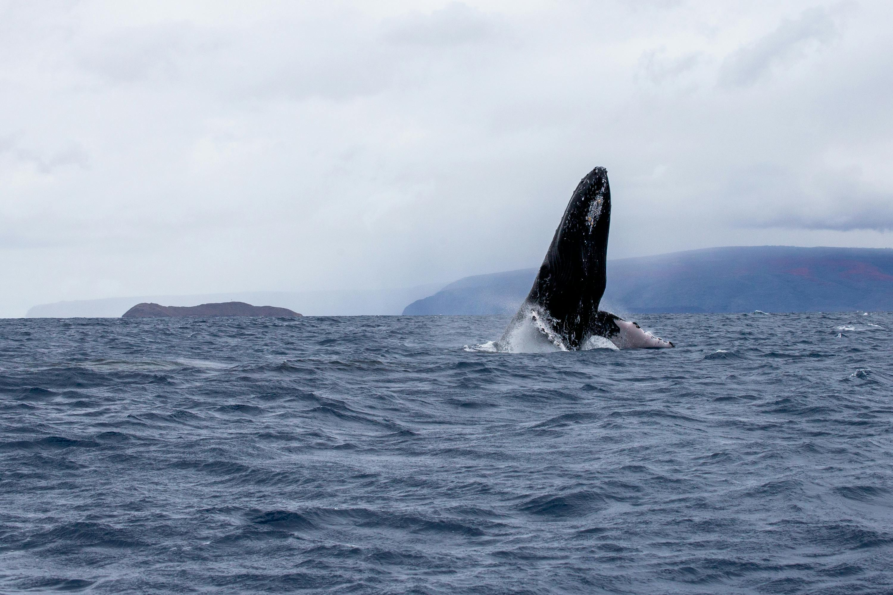
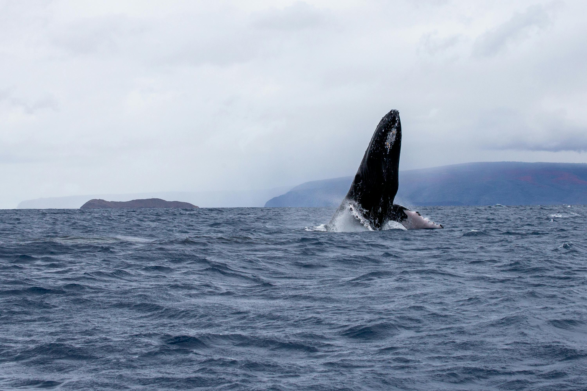

GIGANTES DEL OCÉANO
Amenazas que enfrentan las ballenas.

Amenazas que enfrentan las ballenas.
Las ballenas son mamíferos marinos que habitan en todos los océanos
del mundo. Son criaturas migratorias que recorren grandes distancias
en busca de alimento y refugio.
Las ballenas desempeñan un papel vital en el ecosistema marino, ya que
ayudan a controlar las poblaciones de peces y otros animales marinos.
Sin embargo, enfrentan una serie de amenazas que ponen en peligro su
supervivencia.
Aquí aprenderás sobre estas amenazas y cómo puedes ayudar a proteger a
las ballenas.
 

A pesar de estar protegidas, especialmente por la moratoria sobre la
caza de ballenas de 1986, algunas especies están al borde de la
extinción.
Ocho de las trece grandes especies de ballenas siguen en peligro de
extinción, son vulnerables, después de décadas de protección. Según
datos de la "Lista Roja de especies amenazadas", elaborada por IUCN
(Unión Internacional de Conservación de la Naturaleza), que nos
permite conocer el estado de la amenaza de las especies de animales y
plantas en el mundo.
Las ballenas enfrentan una serie de amenazas, tales como: el ser
humano a través de la caza, las redes de pesca y la industria
(colisiones con buques, la contaminación y el desarrollo de petróleo y
gas) y el cambio climático amenazan la vida de estos animales.
Cada una de estas amenazas tiene un impacto negativo en las
poblaciones de ballenas. Es importante tomar medidas para proteger a
las ballenas de estas amenazas.